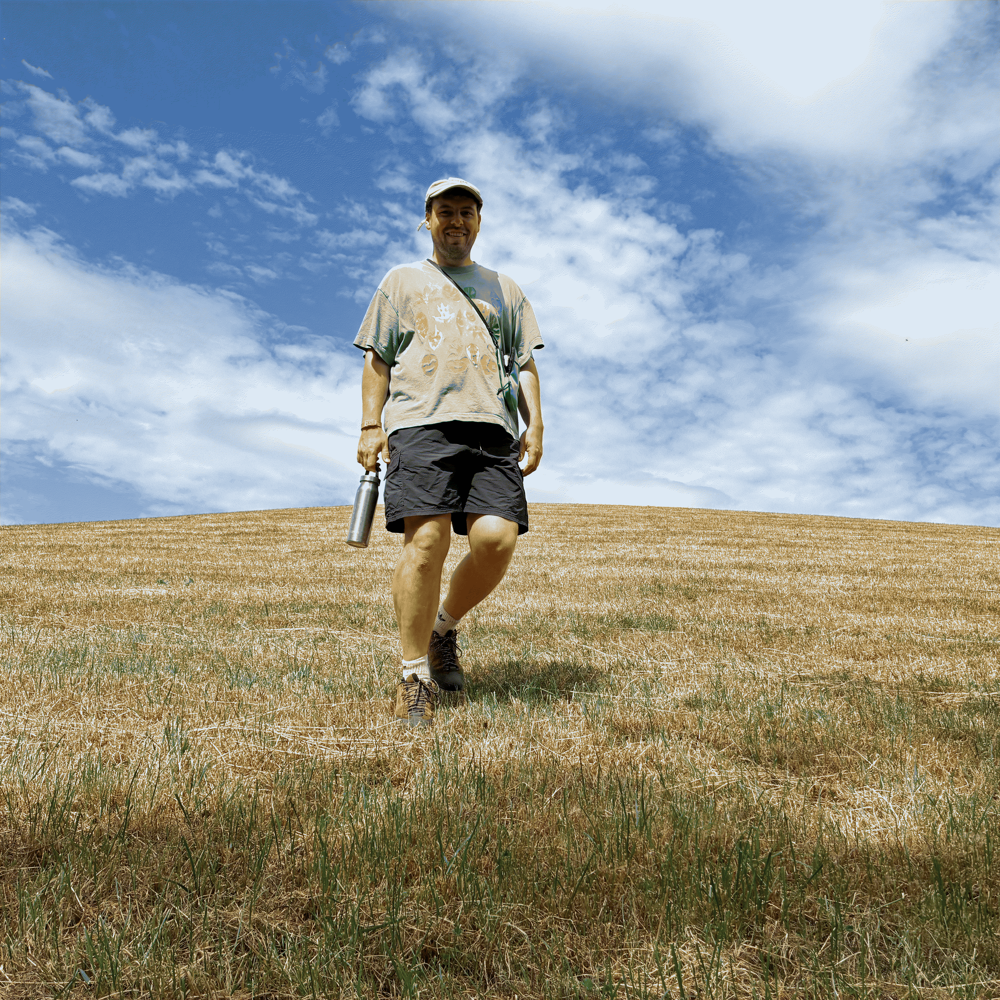

🪨
gary-martin is an artist, designer, and researcher. he is interested in systems of production and consumption, and their ecological entanglement. his social practice spans participatory art, speculative tools, and audio-visual composition.
for over a decade he has facilitated creative projects with thousands of young people across Wales, and partners like Cadw,The King's Trust, Shakespeare's Globe, and Tate Britain.
he is a Pervasive Media Studio resident ↗, and designer with pyka ↗ where he develops alternative platforms for music interaction. he is a lecturer at the University of Gloucestershire ↗ where he manages releases on Parkland Records ↗ and his teaching focuses on critical practice in relation to networked cultures and political ecology.

he / they
📍 y fenni, cymru
email me
selected projects
 Practicing Scales
Practicing Scales
 Soundbites
with pyka
Soundbites
with pyka
 Third Nature Recordings
Third Nature Recordings
 looper remixes
with pyka
looper remixes
with pyka
 The Expression Orchestra
with pyka
The Expression Orchestra
with pyka